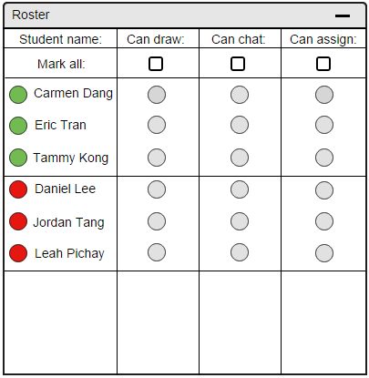
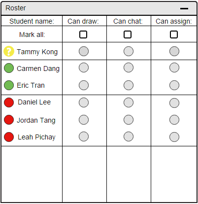
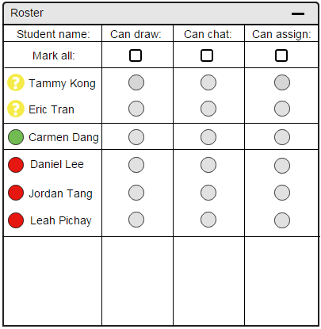
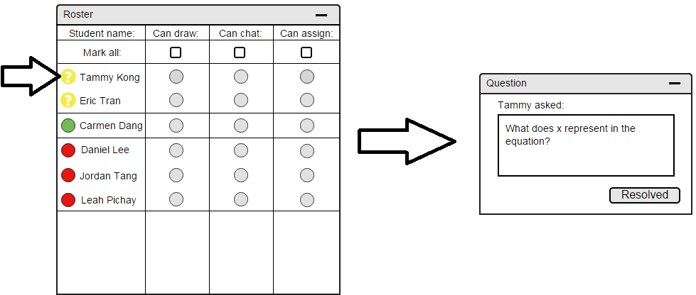
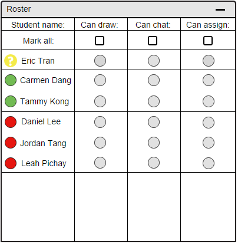
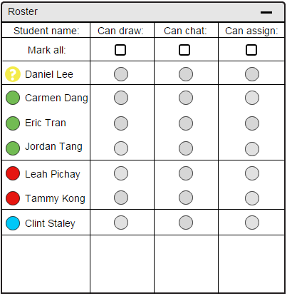

A user asks a question via the chatbox of E-Class.
When a student has a question involving one of the lecture material, he or she can interact with the teacher via the question mark tool in the chatbox.
Once the question is asked via the chatbox tool, the instructor is notified of the question through the roster.
Figure 79 shows the instructor's roster if the no attended students have a question.
For convenience purposes, an instructor as the option to assign privileges to all of his or her students at one instance.
For the purpose of questions queuing in roster, remote guests' questions are handled in the same manner as students.
The following figures only show a student's questions being handled, however, the same concepts still apply for remote users.

Figure 79: Instructor's view of a course roster with half of the student present
When a student successfully submits a question to the instructor, he/she moves up within the roster to the top of the list.
Their bubble indicator that is used for attendance checking changes into a yellow question mark as well in order to make it more noticeable to the instructor.
The purpose for doing so is to make it easier to notify the instructor there is a question that needs to be answered.
In Figure 80 below, student A (Tammy Kong) has a question and is prioritized over all other students as she rises to the top of the list.

Figure 80: Instructor's view of a course roster with one student having a question
If another student submits a question, the same concept still applies. He or she rises to the top of the list and their bubble indicator changes to a yellow question mark.
However, the sorting is not be in alphabetical order as like attendance. Sorting of the questions works on a first come first serve basis.
For example, in Figure 81, student B (Eric Tran) submits a question, raising his position in the roster list. His question is still below student A's however, because her question was sent first.

Figure 81: Instructor's view of a course roster with two student having a question
To answer a question, the instructor clicks on the yellow question mark besides the student's name. When he or she clicks on the question mark, a question dialogue box pops up on the instructor's screen.
Figure 82 shows this scenario as it happens.

Figure 82: Instructor's view of a question dialogue box
The instructor has two options at this point in time. By clicking the "minimize" button at the top right corner, he or she can pull the question down until he or she wants to bring it up again.
The instructor also has another option in which they can click "Resolved". By doing so, they are indicating that they are done answering the question. Once "Resolved" is clicked, the question dialogue box
closes. The roster updates accordingly, and removes the student who asked the question from the question queue.
Figure 83 below shows the scenario where Student A's (Tammy Kong) question has been answered. Her name drops from the question queue back down to a regular attendance roster.
The question mark left of her name has changed into an attendance bubble indicator. Alphabetical ordering takes over again.
The question queue then moves the next student in line to the top. In this case, student B's (Eric Tran) name rises to the top of the list.

Figure 83: Instructor's view after Student A's question has been answered
Question queuing and attendance change are done automatically by the E-Class. Guests that remotely login will be shown automatically as well.
Overall, in the end, the roster filled with (1)students with questions, (2)present students (no questions), (3)absent students, and (4)guests will look like the following Figure 84.

Figure 84: Instructor's VIew of a complete classroom
Prev: show/hide-overlay
| Next: [none]
| Up: roster
| Top: index